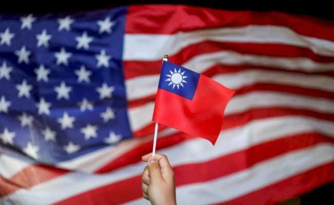
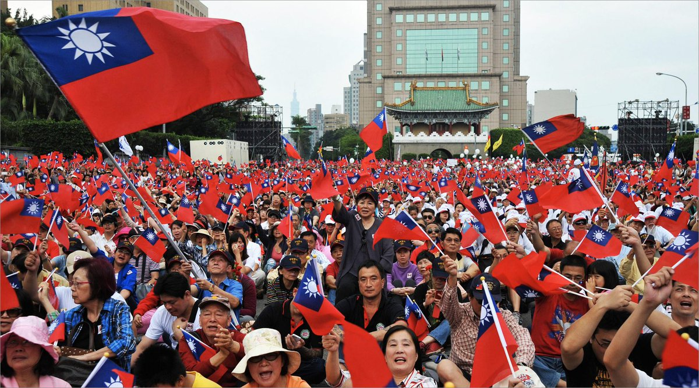

Россия выступила против незавсимости острова Тайваня от Китая
В ходе переговоров президента России Владимира Путина и председателя КНР Си Цзиньпина стороны выпустили совместное заявление. В нем, в частности, говорится о позиции России по Тайваню: Москва выступает категорически против независимости острова. Тайвань фактически независим от КНР, последняя же считает его своей территорией.
«Российская сторона подтверждает приверженность принципу "одного Китая", подтверждает, что Тайвань является неотъемлемой частью Китая, выступает против независимости Тайваня в какой бы то ни было форме»,— говорится в документе.
Напомним, США поддерживают Тайвань в его отношениях с КНР, но не признают остров как государство. В ноябре 2021 года президент США Джо Байден подтверждал в разговоре с Си Цзиньпином, что не подстрекают к независимости Тайваня и придерживаются политики по закону об отношениях с Тайванем 1979 года.
Отношения между Тайванем и Китаем обострились за последние два года из-за усиления военного и дипломатического давления на остров с китайской стороны. В конце 2021 года Китай пригрозил Тайваню войной в случае, если остров будет пытаться получить независимость. Тайвань ответил, что КНР недооценивает решимость острова отстаивать свободу.